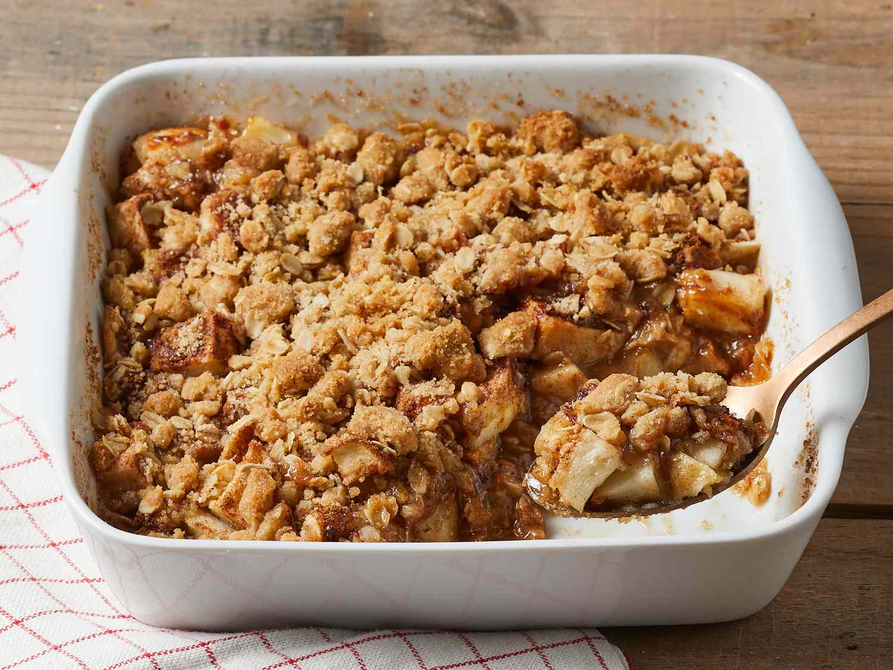

Home
Apple Crisp

A delicious apple crisp
Ingredients
- Apples: You'll need 10 cups of peeled, cored, and sliced all-purpose apples.
- Sugars: This apple crisp recipe calls for white sugar in the filling and brown sugar in the topping.
- Flour: All-purpose flour thickens the filling and gives the topping some structure.
- Cinnamon: A teaspoon of ground cinnamon lends warmth that perfectly complements the apples' flavor.
- Oats: Use quick-cooking oats for the topping.
- Leaveners: Baking soda and baking powder act as leaveners.
- Butter: Melted butter gives the topping welcome richness.
Steps
Step 1
- Place the apples in a baking dish.
Step 2
- Sprinkle the apples with white sugar, flour, and cinnamon.
Step 3
- Drizzle water over the apples.
Step 4
- Make the oat topping, then sprinkle it over the apples.
Step 5
- Bake until the topping is golden brown and the apple mixture is bubbly.
Recipe Link down bellow:
Recipe Link